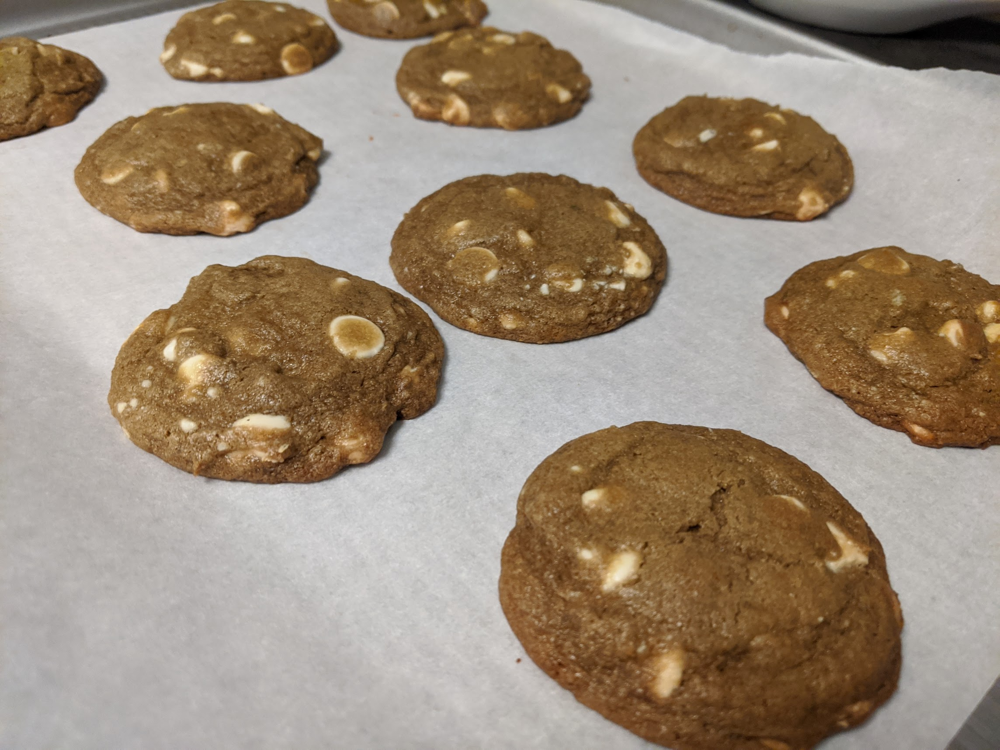

Matcha White Chocolate Chip Cookies!

Ingredients:
- 1/2 cup (1 stick) unsalted butter
- 1 large egg
- 1/3 cup white sugar
- 1/2 cup brown sugar
- 1 teaspoon vanilla extract
- 1 1/2 cup (186g) all-purpose flour
- 1/2 teaspoon baking soda
- 1/2 teaspoon salt
- 1 tablespoon matcha powder
Directions:
Preheat oven to 350F
- With the ingredient gathered, start by mixing softened butter. An easy way to do this is by microwaving butter in 5 second increments until softened. Usually only takes 2-3 times.
- Mix butter and sugars together until well mixed and smooth.
- Add egg and vanilla extract and mix until well combined.
- In a seperate bowl, combine all dry ingredients. I advise to sift the matcha powder as it can clump easily and makes mixing harder.
- Slowly integrate dry ingredients with wet ingredients.
- Optional* - Cover and refrigerate for 2 hours to overnight.
- Scoop cookies into 2 tablespoon servings and place on tray at least 2 inches apart from each other
- Bake at 350F for 15 minutes, rotating tray halfway through.